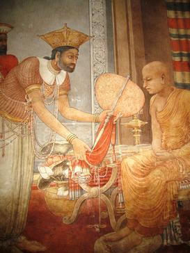
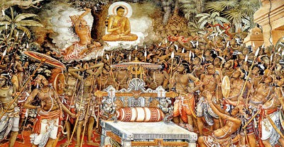
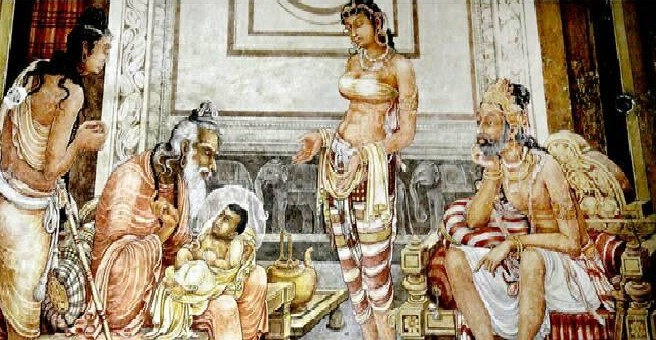
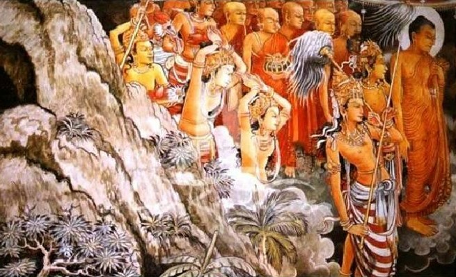

- වර්ෂ 1897 ජූනි 17 වන දින හලාවත මාදම්පේ නගරයට නුදුරු මහවැව දී සෝලියස් මෙන්ඩිස් උපත ලබා ඇත.
- කැලණි විහාර බිතු සිතුවම් නව බෞද්ධ විහාර චිත්ර ශෛලියක් හඳුන්වා දීමට පුරෝගාමී විය.
- කැලණි විහාරයේ සිතුවම් නිර්මාණය කිරීමට ආභාසය වී ඇත්තේ, ඉන්දියාවේ අජන්තා, එල්ලෝරා හා භාග් වැනි ස්ථානවල කලා නිර්මාණ හා ලංකාවේ සීගිරිය, තිවංක පිළිමගේ වැනි ඉපැරණි සිතුවම් නිර්මාණයන් ය.
- කැලණි විහාරයේ සිතුවම්වලට අමතරව රණස්ගල්ල විහාරය, ගිරිඋල්ල මැද්දෙපොළ විහාරය, හබරාදුව පිටිදූව කැලණිගොඩ විහාරය, සහ පොළොන්නරුව ශ්රී විජය විහාරය යන විහාරස්ථානවල ද සෝලියස් මෙන්ඩිස් සිතුවම් ඇඳ ඇත.
- නව කැලණි විහාරයේ බිතු සිතුවම් තේමාත්මකව කොටස් දෙකකි.
- බුද්ධ චරිතයේ විවිධ අවස්ථා
- ඓතිහාසික සිද්ධි / පුවත්
- බුද්ධ චරිතයේ විවිධ අවස්ථා
- මහමායා දේවිය දුටු සිහිනය
- වප් මඟුල
- සිප් සතර හැදෑරීම
- සුජාතාවගේ කිරිපිඬු දානය
- සම්බුද්ධත්වයට පත්වීම
- සම්බුද්ධ පරිනිර්වාණය
- ඓතිහාසික සිද්ධි
- විජය කුමරුගේ ලංකාගමනය
- අනුරාධපුර මහාසීමාව බැඳීම
- අළුවිහාරයේ දී ත්රිපිටකය ග්රන්ථාරූඨ කිරීම
- හේමමාලි කුමරිය හා දන්ත කුමරු ශ්රී දළඳා වහන්සේ ලක්දිවට වැඩම කරවීම
- සංඝමිත්තා තෙරණියෝ ශ්රී මහබෝධි අංකුරය ලක්දිවට වැඩම කරවීම
- බුදුන්වහන්සේගේ ලංකාගමනය දැක්වෙන මහියංගනං, නාගදීපං, කල්යාණං පදලාංඡනං යන ප්රධාන සිතුවම් සතර
- කැලණි විහාරයේ චිත්රවල දැකිය හැකි පොදු ලක්ෂණ:
- රිද්මයානුකූල හා විස්තරාත්මක මානව රූප සම්පිණ්ඩනය
- ප්රාණපූර්ණ සියුම් රේඛාකරණය
- සියුම් ව ගොඩනගන ත්රිමාන ලක්ෂණ සහිත අඳුරු කහ, දුඹුරු, කළු, සුදු ආදී වර්ණමාලාවක් භාවිත කිරීම
- අඳුර තුළින් ආලෝකය වඩාත් තීව්ර ලෙස මතු කර දක්වන, කියරෝස්කූරො සිද්ධාන්තයට සමාන වර්ණ ගැන්වීමේ ලක්ෂණ පෙන්වීම
- විශාල අවකාශයක් මත ක්රියාකාරී රූප බොහෝ ගණනක් එකට සම්පිණ්ඩනය කිරීම
- වියළි බදාමය මත බිතු සිතුවම් ඇදීමේ ශිල්ප ක්රමය වන ප්රෙස්කෝ සිකෝ ශිල්ප ක්රමය භාවිතය
හේමමාලා කුමරිය හා දන්ත කුමරු ශ්රී දළදා වහන්සේ ලක්දිවට වැඩම කරවීම
- කීර්ති ශ්රී මේඝවර්ණ රජ සමයේ (ක්රි. ව. 301 -328) කලිඟු රට ගුහසීව නම් රජතුමා විසින් දළදා වහන්සේගේ ආරක්ෂාව පතා හේමමාලා කුමරිය හා දන්ත කුමරු අත ශ්රී ලංකාද්වීපයට ශ්රී දළදා වහන්සේ වැඩම කරවීම මෙයින් නිරූපණය කෙරේ.
- විශාල අවකාශයක් මත මානව රූප ලාලිත්යමය ඉරියවුවලින් යුතුව සම්පිණ්ඩනය කර ඇත.
- ඵෙතිහාසික බිතු සිතුවම්වල දක්නට ලැබෙන සංගත වර්ණමාලාවක් භාවිත කරමින් ත්රිමාණ ලක්ෂණ සියුම් ලෙස මතු කර ඇත.
- සිතුවම් සඳහා වර්ණ යෙදීමේ දී අඳුරු කහ, දුඹුරු, කළු, සුදු ආදී වර්ණවල ප්රභේද මතුවන අයුරින් චිත්ර නිර්මාණය කර ඇත.
- රිද්මයානුකූල හා ප්රකාශන ගුණයෙන් යුතු රූප සියුම් රේඛාකරණයෙන් පරිපූර්ණත්වයට පත් කර ඇත.
- මෙම සිතුවමේ පසුබිම දැක්වීමේ දී ශිල්පියා ස්වභාවික පරිසරයේ අපූර්වත්වය ගම්යමාන වන සේ ප්රතිනිර්මාණය කර ඇත.
සංඝමිත්තා තෙරණින් වහන්සේ ජය ශ්රී මහා බෝධිය ශ්රී ලංකාවට වැඩම කරවීම
- මෙම සිතුවමින් නිරූපණය වන්නේ ඉන්දියාවේ ධර්මාශෝක රජතුමාගේ දියණියක වූ සංඝමිත්තා තෙරණිය විසින් ශ්රී මහා බෝධි ශාකාවක් ලංකාවට රැගෙන ඒම සහ සිරිලක රජ කළ දෙවනපෑතිස් රජතුමා දියට බැස ශ්රී මහා බෝධිය භාරගැනීමට සූදානම්වන අවස්ථාව වේ.
- විශාල තලයක් මත සිතුවම සම්පිණ්ඩනයේ දී ඇතිවන අභියෝග ජය ගනිමින් අදාළ ප්රස්තුතය තලයට ගොනු කර ගැනීමේ දී ශිල්පීය හැකියාව රූප, වර්ණ හා රේඛා සංරචනය මගින් මැනවින් ප්රකාශ වේ.
- මෙම සිතුවමින් දැක්වෙන රුවල් නැව ඉතා විස්තරාත්මක හැඩතල මගින් හා ජලයෙහි චාලක ස්වරූපය සියුම් රේඛාකරණය මගින් ද ඉතා විසිතුරු ලෙස දක්වා ඇත.
- පැරණි සාම්ප්රදායික චිත්ර කලාවේ රිද්මයානුකූල රේඛාවට නව ජීවයක් එක් කරමින් හා සම්ප්රදායික සංගත වර්ණමාලාවකට අනුගත ව අඳුරු කහ, දුඹුරු, කොළ, සුදු, කළු ආදී වර්ණ භාවිත කිරීම හඳුනාගත හැකි ය.
- අඳුර තුළින් ආලෝකය වඩාත් තීව්ර ලෙස මතු කරන කියරෝස්කූරො නැමති වර්ණ කිරීමට සමාන ලක්ෂණ මෙම සිතුවමෙහි දැකිය හැකි ය.



